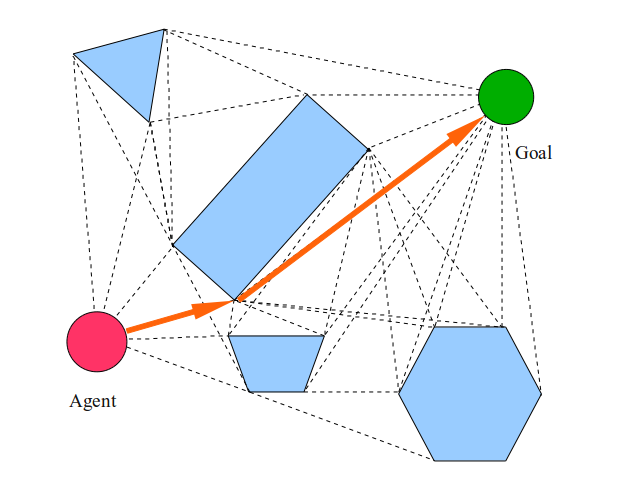
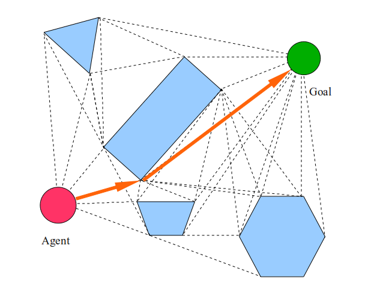

LATEST POSTS
Motion Planning in Robotics
Visual SLAM - An Introduction
Simulataneous Localization and Mapping - An Introduction
SAMPLING BASED MOTION PLANNERS
Motion planning is the soul of autonomous robot motion/navigation but given the huge variations in operational conditions, robot architecture and tasks, motion planning for robots becomes one of the most sophisticated domains of robotics.
Given the complexity of a common robot operational indoor/outdoor scene, the ideal expectation of a motion planning algorithm functional across all possible scenarios is extremely challenging. While there is enough effort put into exploiting the robot's physical model and degrees of freedom during motion planning; there is substantial effort put into modeling the environment and its constraints as well.
For instance, navigation of a mobile robot (assumed to be a point object located at the robot's geometrical center ) in a warehouse involves having a padding (generally equal to the robot footprint) around all the edges of the warehouse and around the obstacles because it is practically impossible for the robot's center to go further out. Similarly, an industrial manipulator arm with fencing all around cannot obtain a pose where, though the end-effector lies within the allowed workspace has an IK configuration with a portion of the robot extruding out of the fencing.
Such intricacies necissate the formulation of different motion planning algorithms with varying assumptions and performance specifications. This article discusses the sampling-based motion planning techniques and its variants, the most used techniques implemented on mobile robots used in the industry and academia alike.

Introduction
MP algorithms are generally designed knowing the limitations and demands of the environment. Also, a lot of motion planning attempts to reduce the environment and obtain a simplified version of the same for computational interpretation. Discrete search techniques are used to derive finite motion waypoints that connect the start and end. A grid-based representation of the environment is one such example, which, although promises optimality and quick solution, it is neither an adequate representation of the environment nor suitable for high dimensional state-space.
Instead of systematic discretization of the C-space and employing search algorithms, sampling-based algorithms randomly extract samples from the C-space and then construct a path out of it. Sampling-based algorithms are more useful in high-dimensional scenarios and find more optimal solutions.
Motion planning eventually is a PSPACE-hard problem where the complexity grows exponentially with C-space dimensions and gets extremely challenging with completeness and optimality requirements.

Discrete Motion Planning
It is important to acknowledge the discrete motion planning pipeline and its nuances. Despite the already mentioned limitations, discrete MP is still employed on several ocassions for ease of use and in limited complexity applications.
Discrete-search creates a discrete, finite, systematic and specific quantizated representation of the environment, obtain action-space and their involved costs and eventually employ the concerned search algorithm to find the path. They generally employ techniques like Breadth-First search, Depth-First search, A* and its variants and Dijkstra algorithms to find paths for the robot.


Owing to the exploding nature of runtime and computational expense of search algorithms for large discrete spaces, dimensionality issues and accrual of potential inaccuracies due to the resolution of the discrete spaces; discrete motion planning becomes a non-ideal, very limited in scope technique.
Sampling-based Motion Planning
Sampling in motion planning uses the complete continuous C-space, draws samples out of it, checks the viability of the sample and eventually tries to use it to create a path towards the goal. Several assumptions and hand-crafted constraints/relaxations on performance and results help in designing very efficient real-time paths for robots.
Sampling is not affected by dimensionality of the C-space and with relaxed completeness (probabilistic completeness, i.e. asymptotic convergence) and sub-optimality conditions, it promises to be the most effective in almost all use-cases.
The Monte-Carlo methods engendered the belief in using a subset instead of all the possibilities in any state-space for search problems. Sampling-based algorithms promise better runtime performance and thus trump other more exhaustive techniques.
| Advantages | Disadvantages |
|---|---|
| Probabilistically Complete | Unlike to sample narrow passages |
| Applicable to High Dimensional State Space | Sub-optimal solutions |

The most common sampling-based algorithms discussed here are Probabilistic Roadmaps and Randomly-Exploring Random Trees. There have been several variations proposed and used for these algorithms that have improved performance, completeness, speed and accuracy.
PROBABILISTIC ROADMAPS- PRM
Probabilistic Roadmap planning is a construct and multi-query motion planning technique proposed first in 1996. It has two steps - a learning phase (generally preprocessed ) and a query phase. The learning phase does the bulk work of understanding the workspace upfront before the second query phase which merely searches through the representation derived in the prior phase to provide a final solution.
In the learning phase - several samples are drawn from the workspace and connected to ones nearby, thus creating a roadmap between them all, including the start and desired end point. It lays the foundation for connectivity in the in the Cfree. The learning phase has a construction phase and an expansion phase.
The construction phase creates the roadmap and the expansion phase attempts at filling the gaps in connectivity between sections of the workspace positioned uniquely, involving additional sampling and connections thereafter between the disconnected components.
- Initialize the graph G(V,E) where V is the collection of nodes (the sampled points, also called milestones) and E is the collection of edges connecting certain nodes
-
Randomly sample definite number of configurations, ensure they are collision free samples and add them to V
Extracting random samples still is still tricky. Ideally, the samples should be distributed across the complete Cspace. Usually, uniform probability distribution over the particular dimension is used to ensure a map with good connectivity. -
Attempt connecting each node in V to certain, k number of other nodes and find a path between them using a local planner. The local planner can either be a fast one that tries connecting directly between the samples or a slow non-deterministic one.
If the connection is established between two nodes (the path being collision-free), the edge E(node1, node2) is saved. Generally, connectivity between the nodes is inversely proportional to the distance between them.
- Certain nodes are selected for expansion, i.e. more connectivity is attempted from those nodes.
-
Each node n in V is assigned a weight w(n). It is an estimate of proximity of the node to difficult regions like the narrow passage shown above.
Weights are normalized such that Σw(n) = 1 and the ones with highest weights(like the red point in Figure 6) are selected to expand. If a node has poor connectivity, it should have a higher weight w(n). -
Estimation of weights for the node n can use different standards. It could be counting a certain number of nodes from V lying within a known distance radius of the node n or checking distances between a node n and its nearest connected nodes.
For the former, lower the number of connected nodes, higher the chances of the node being deserted and has poor connectivity; while for the latter, the larger distance between the node and its connected nodes, the higher connectivity gap or disconnection exists in that region.
The results from local planner connection attempts for a particular node can also be used to understand the connectivity of the same. High failure cases can be intuitively be understood as the node connected poorly or being completely disconnected. Such nodes are awarded higher weights and more connection is attempted around these. -
For the local planner,
Failure Ratio, fr(n) = f(n) / t(n) + 1 where f is the number of failures during attempted t number of connections.
Finally, for one node, the weight
w(n) = fr(n) / Σ fr(a)
where fr(a) is for every node a in V - Finally, after the normalized weights are obtained, nodes with weights over a certain threshold are selected are expansions
-
For a selected node n, at a pre-defined distance from it and in a random direction; a new node nnew is generated.
- If nnew lies in Cfree and the edge e connecting them also does, then nnew is added to V and the edge e(n, nnew) is saved in E.
- If not, the same attempt for a new node nnew is attempted in another random direction.
- At the end of expansion phase, more connectivity and ideally in inaccessible areas of the map, is obtained.

The Query Phase is a relatively easier phase with all the bulk computational processing already done. It accepts a start s and a goal g configuration and attempts to find a path between them.
Ideally, a path exists in the roadmap connecting the two and the query returns that path (a collection of all intermediate edges passing through other intermittent nodes that eventually establish connectivity between s and g)
Sampling algorithms are apt for even high-dimensional robot state-space and also suitable for real-time applications. Randomly Growing Rapi Trees(RRT) or PRM(Probabilistic Roadmaps) are the commmon sampling-based algorithms.


Exact Planning Algorithms
Certain planning algorithms try to solve for motion planning problems directly. Exact algorithms are thorough in their approach and thus find a solution if it exists, for sure. It computes exact path of motion between any two points (terminal or intermittent) that are supposed to solve a part of the problem.
Cellular decomposition or visibility graphs are the most common examples of such algorithms. They are however intractable and computationally expensive, thus not really extensible for high-dimensional problems.
 

Search-based Planning Algorithms
Search-based algorithms employ general computer-science search algorithms and solve the motion planning task as optimization tasks. Generally, the MP problem is represented as a graph with several grids/lattices and then optimal connections/nodes between the grids that connect the start and desired end points are derived.
Dijkstra, A* and other A* variants are the most common examples of search-based algorithms. While they are again not apt for high-dimensional solutions, they can be applicable to certain tasks like coverage problems and vehicle planning.


Other Planning Algorithms
The above-mentioned algorithms are all model-based operations that need the robot model to determine the feasibility of the algorithm. There has been recent research done in reinforcement learning and other AI technology for motion planning.